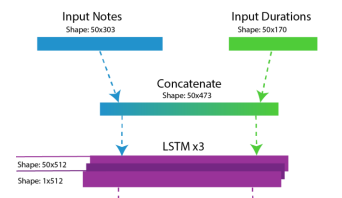

Summary
Context
This project was pursued by a research team started in MSOE's AI club. The research team currently consists of me and four other people.
Process
This was a more structured project. It started with a team-brainstorming session where we decided that we want to pursue an AI music generation project.
....................
With a project selected, we spent every week meeting for an hour to discuss what work the group members have done over the week, and to delegate tasks to work on before next meeting.
....................
There were no formal task-tracking tools we used, and team members were expected to occasionally have less progress than expected; we did this to account for busy schedules.
Task
The task was to apply artificial intelligence to the problem of music generation. We narrowed this down to the task of continuing an input song by using midi data (a type of music data).
Results/Deliverable
The result was an artificial intelligence model which can continue any arbitrary input music data. This project is still actively being worked on, so this model is currently being further improved.
....................
We also had the opportunity to publish a paper during the MICS conference held at MSOE in 2022.
Time/Schedule
The project started in winter of 2021-2022. The initial timeline was to meet every week until the end of that school year.
....................
We have since decided to continue the project into this year, and we are continuing to meet every week when classes are active.
Constraints/Challenges
A personal challenge I faced was my limited Knowledge of the field of AI. This was also the case for most of the other team members.
....................
Over the course of this project, me and the group members have vastly increased our experience and knowledge in AI.
....................
Another constraint was the sparsity of meetings. This project could have been developed faster if we met multiple times a week, but we decided against this since the project didn't have a hard “ending” date.
Insights
Things Done Well
The thing I did best was gaining knowledge on researching and using AI. My experiences in this project gave me the means to start my own individual AI projects.
....................
I also did well on my section of the paper we published. Of the paper's topics, I wrote about RNNs and LSTMs in the “Methods and Project Pipeline” section.
Skills Gained/Improved
- Using AI in general. (I had little prior experience with AI, and this project gave me the tools I needed to learn more.)
- Programming in the Python language. (I had limited prior experience in python.)
- Academic writing (for the MICS paper)
- Working in a team
Improvement Opportunities
The resulting music-generation AI model did not have adequate results when we completed the first version. The results now are better, but still not at the level of a human songwriter.
....................
We also employed the use of a slightly outdated AI technology (LSTMS) in the first version. This has since been corrected; we are now using transformers (a different type of AI model).
Team Dynamics
Being a team project, I was given many responsibilities and tasks over the course of the project's lifetime.
....................
Some things I've done to contribute are:
- Research the MIDI song-storing format and find a way to interact with it.
- Research LSTMs to gain a deeper understanding of how they work in our model, and to write about them in our MICS paper.
- Explore alternate methods of music generation and audio manipulation.
Gallery
A diagram of an LSTM cell (from our MICS paper)
The input layers of the AI
Real results from our AI (converted to sheet music)

Technical Details
As previously mentioned, there is a paper detailing the details of our project.
Some tools and frameworks we used were:
- Keras
- Tensorflow
- Numpy
- Pyplot
We also made use of Rosie, MSOE's supercomputer.